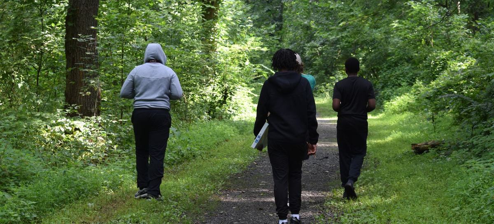
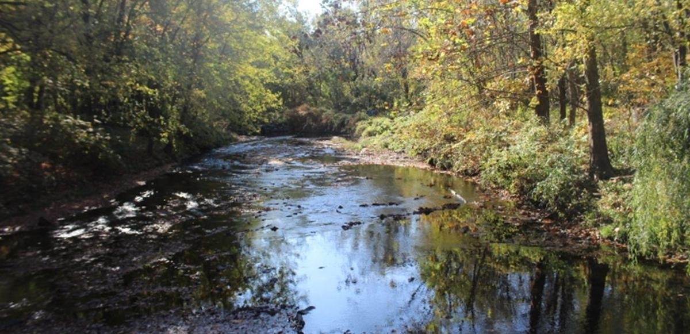
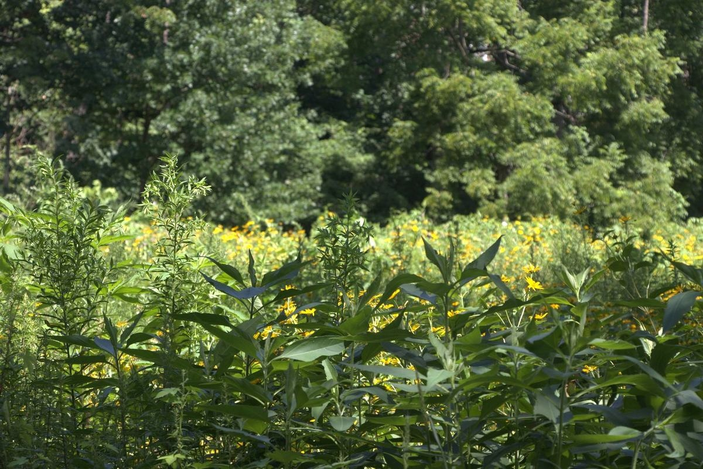
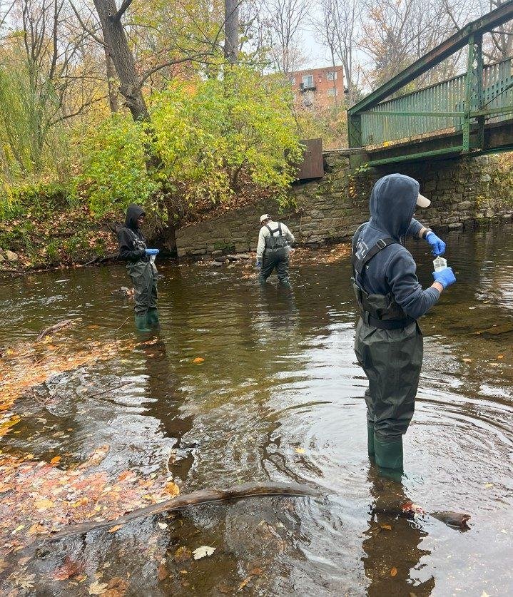
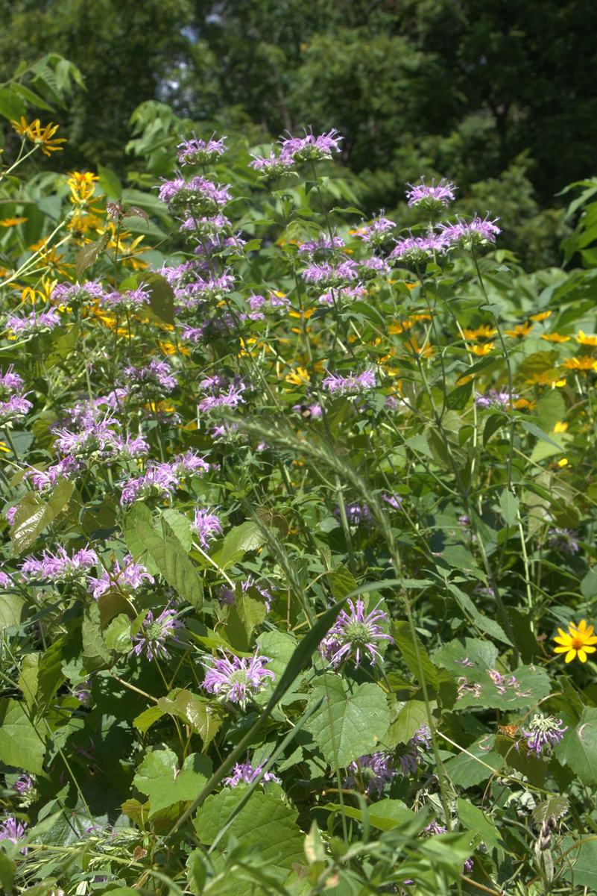
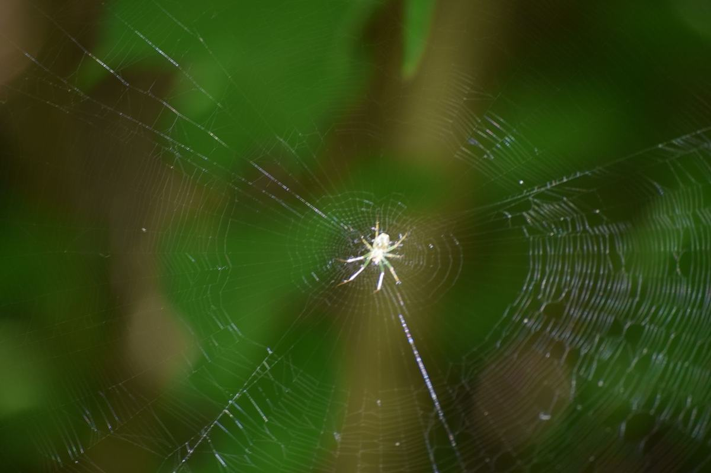
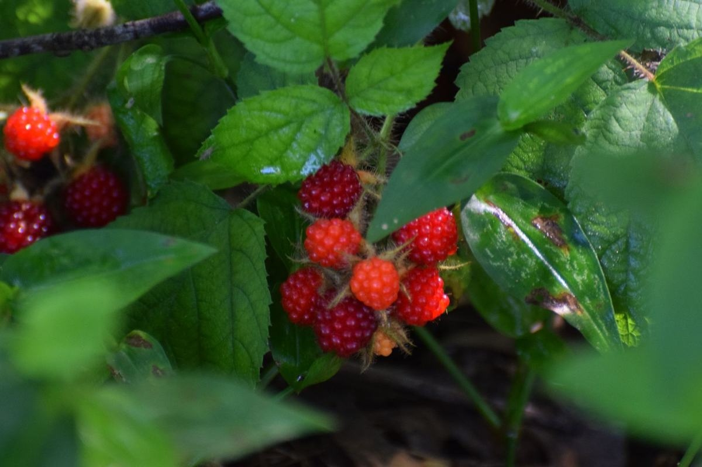
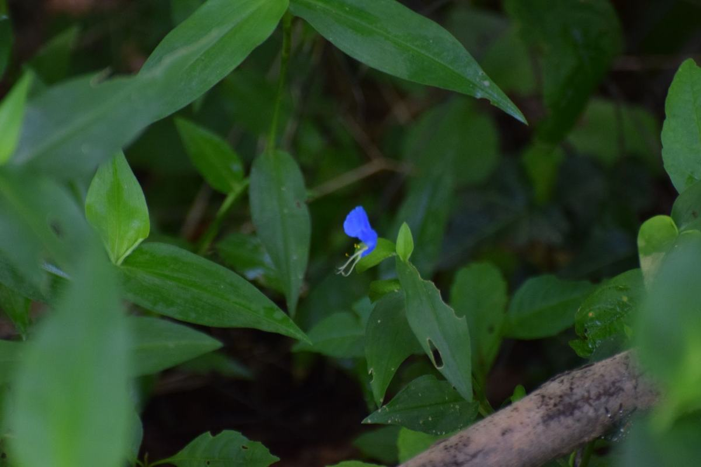

Official project site
Last updated October 31, 2026
Next community meeting Tuesday, December 1, 6:00–7:30 PM at the Cobbs Creek Community Environmental Center. Everyone welcome.
All meetingsCobbs Creek Park · West & Southwest Philadelphia
The future of Cobbs Creek starts with its neighbors. Residents and local organizations are coming together to guide improvements to the park, its trails, and the creek. Their priorities will shape future investment and a shared approach to caring for these spaces over time.
Explore the project







For neighbors · closes Nov 16
We are seeking Cobbs Creek resident park champions.
For consultants · due Nov 23
We are seeking a consultant to lead the planning process and write the plan with the community.
Cobbs Creek Community Greening Plan
Questions? Please reach out to us at cobbscreekgreeningplan@gmail.com
Funded by the William Penn Foundation